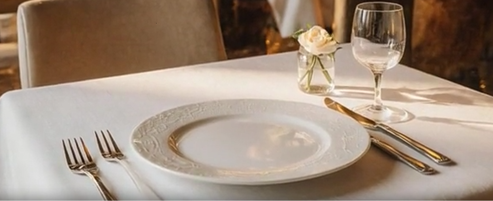
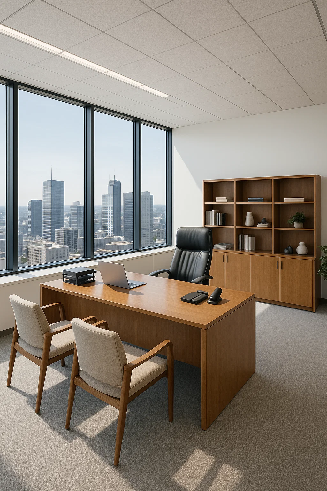

公司起源 Begin
Begin
Begin｜私たちの物語
西風西式料理的誕生故事與發展歷程。
The story behind the birth and growth of Zephyr Western Cuisine.
西風（Zephyr Western Cuisine） の誕生と歩みをご紹介します。
起源與歷史
Origins & History
起源と歴史

西風 (Zephyr Western Cuisine)
Zephyr Western Cuisine
西風 (Zephyr Western Cuisine)
創立時間：2018 年秋季
Established: Autumn, 2018
創立：2018年 秋
地理位置：鄰近輔仁大學校區，位於新莊區中正路上某一巷弄內
Location: Tucked away in a quiet alley off Zhongzheng Road, Xinzhuang District, near the Fu Jen Catholic University campus.
所在地：新北市新荘区・中正路の路地に位置し、 輔仁大学キャンパスの近くにあります。
起源故事：「西風」的創立，源於一位資深餐飲人與一位熱衷於歐洲文化的輔大校友的共同夢想。他們觀察到輔大周邊雖然有許多美食，但缺乏一家能提供經典、道地且具備質感的西式餐飲空間，讓師生和社區居民能有一個安靜舒適的環境，品嚐精緻料理，享受慢活時光。
Our Origin Story: The founding of Zephyr began with a shared dream between a seasoned culinary professional and a Fu Jen alumnus with a deep passion for European culture. While observing the vibrant food scene around the Fu Jen University area, they noticed a gap — although there were many dining options, there was no space that truly offered authentic, classic Western cuisine in a refined and comfortable setting. They envisioned a place where faculty members, students, and local residents could enjoy thoughtfully prepared dishes in a calm, welcoming atmosphere — a place to slow down, savor fine food, and embrace a more relaxed pace of life.
誕生の物語：「西風」は、長年にわたり飲食業界で経験を積んできた料理人と、 ヨーロッパ文化に深い情熱を持つ輔仁大学の卒業生、 二人の共通の夢から誕生しました。 輔仁大学周辺には多くの飲食店がある一方で、 本格的でクラシックな西洋料理を、落ち着いた上質な空間で提供する店 が不足していることに気づいたのです。 教職員、学生、そして地域の方々が、 静かで心地よい空間の中、丁寧に仕上げた料理を味わいながら、 ゆったりとした時間を過ごせる場所を目指しました。
初期歷史：創立初期，西風主打以實惠的價格和嚴謹的製作工藝為口碑。我們堅持每日採購新鮮食材，不使用半成品，將每一道菜都視為藝術品般對待。
Early DevelopmentIn its early days, Zephyr built its reputation on affordable pricing combined with uncompromising craftsmanship. We insist on sourcing fresh ingredients daily, never using pre-made or semi-processed products. Every dish is treated as a work of art, prepared with precision and care.
創業初期：創業当初より西風は、手頃な価格と妥協のない調理技術を信条としてきました。 毎日新鮮な食材を仕入れ、半製品は一切使用せず、 一皿一皿を芸術作品のように大切に仕上げています。
目標：成為輔仁大學周邊最具代表性、最受推崇的西式餐飲品牌。
Our Goal: To become the most representative and highly regarded Western dining brand in the Fu Jen University area.
目標：輔仁大学周辺において、 最も代表的で信頼される西洋料理ブランド となること。
願景：透過精緻的餐飲和溫馨的服務，創造一個能讓顧客「放慢腳步，享受當下」的美食空間。我們致力於將歐洲餐桌上那種注重儀式感和分享的用餐文化帶給每一位來訪的客人。
Our Vision: Through refined cuisine and warm, attentive service, we strive to create a dining space where guests can slow down and fully enjoy the present moment. Our mission is to bring the European dining culture — one that values ritual, sharing, and togetherness — to every guest who walks through our doors.
ビジョン：洗練された料理と心温まるサービスを通じて、 お客様が 「立ち止まり、今この瞬間を楽しめる」 食の空間を創り出します。 ヨーロッパの食卓文化が大切にしてきた 「儀式感」と「分かち合い」の精神を、 すべてのお客様にお届けすることを目指しています。
高層介紹
Leadership Team
経営陣のご紹介

總經理兼主廚：李杰森 (Jason Li)
General Manager & Executive Chef: Jason Li
総支配人 兼 エグゼクティブシェフ：李 杰森（ジェイソン・リー）
專長背景：擁有超過 20 年的西餐烹飪經驗，曾任職於國內多家五星級飯店的西餐廳主廚。精通法式、義式料理精髓，尤其擅長低溫慢煮和醬汁調製。
Professional Background:With over 20 years of experience in Western cuisine, Chef Li has served as head chef at several five-star hotel restaurants in Taiwan. He is highly skilled in French and Italian culinary traditions, with particular expertise in low-temperature cooking techniques and sauce preparation.
経歴・専門分野：20年以上にわたる西洋料理の経験を持ち、 国内の数々の五つ星ホテルのレストランで総料理長を務めてきました。 フランス料理・イタリア料理に精通し、 特に低温調理やソース作りを得意としています。
經營理念：「食材的本味永遠是最好的調味料。」他堅持使用最簡單卻最優質的原料，以精準的火候和細膩的技巧，呈現食材最純粹、最令人感動的味道。
Culinary Philosophy:“The true flavor of ingredients is the finest seasoning.” Chef Li believes in using the simplest yet highest-quality ingredients, combined with precise temperature control and refined techniques, to present flavors that are pure, authentic, and deeply moving.
料理哲学：「食材本来の味こそ、最高の調味料である。」 シンプルでありながら最高品質の食材を用い、 正確な火入れと繊細な技術で、 心に響く純粋な味わいを表現します。
於西風中的定位：西風的菜單設計、廚房管理和烹飪標準皆由他一手建立，是西風「高品質」的代名詞。
Role at Zephyr:He established Zephyr’s menu design, kitchen management, and cooking standards, becoming the very embodiment of the brand’s commitment to premium quality.
西風での役割：メニュー設計、厨房管理、調理基準を一から構築し、 西風の「高品質」を象徴する存在です。
營運總監：林雅雯 (Yvonne Lin)
Operations Director: Yvonne Lin
オペレーションディレクター：林 雅雯（イヴォンヌ・リン）
專長背景：輔大餐飲管理系畢業校友，具有深厚的服務業管理與行銷經驗。對於顧客體驗和環境氛圍的營造有獨到的見解。
Professional Background:A proud alumna of Fu Jen Catholic University’s Department of Restaurant Management, Yvonne Lin brings extensive experience in service management and marketing. She has a keen eye for customer experience and atmosphere design.
経歴・専門分野：輔仁大学・餐飲管理学科卒業。 サービス業の運営・マーケティングにおいて豊富な経験を持ち、 顧客体験と空間演出に独自の視点を持っています。
經營理念：「西風不只賣食物，我們賣的是美好的用餐體驗。」她負責前場服務培訓、環境美學、顧客關係維護，確保每一位顧客從踏進門的那一刻起，就能感受到溫暖與專業。
Management Philosophy:“At Zephyr, we don’t just sell food — we offer a memorable dining experience.” She oversees front-of-house service training, aesthetic presentation, and customer relationship management, ensuring that every guest feels warmth and professionalism from the moment they step inside.
経営理念：「西風は料理を売るだけでなく、心に残る食体験を提供します。」 ホールスタッフの教育、空間美学、顧客関係の構築を担当し、 お客様が入店した瞬間から、 温かさとプロフェッショナリズムを感じていただけるよう努めています。
於西風中的定位：她是將輔大的青春活力和社區的溫馨感注入西風靈魂的人物。
Role at Zephyr: She is the soul who infuses Zephyr with the youthful energy of Fu Jen University and the warmth of the surrounding community.
西風での役割：輔仁大学の若々しい活気と、 地域の温もりを西風の“魂”として注ぎ込む存在です。
環境介紹
Our Space
空間のご紹介
我們的的店面設計
Interior Design Concept
店舗デザイン
旨在營造一個經典、舒適且帶有歐式小酒館氛圍的空間。
Our restaurant is designed to create a classic, comfortable space with a European bistro ambiance.
私たちの店舗は、 クラシックで快適、ヨーロッパの小さなビストロを思わせる空間 をコンセプトに設計されています。
裝潢風格：以沉穩的墨綠色搭配溫潤的胡桃木色，並點綴暖色調的黃銅燈具。整體風格典雅，沒有過度花俏的裝飾，強調簡潔與質感。
落地窗景：店面正面採用大面積的落地窗，引入自然光線，讓客人能一邊用餐一邊欣賞周邊的街景。
開放式廚房 (部分)：設有部分開放的廚房區域，讓顧客能看到主廚們在專業且乾淨的環境中專注地進行烹飪，增加信任感和用餐的樂趣。
社區角落：特別設置一處小型書架，提供與歐洲文化、烹飪歷史相關的書籍，鼓勵等候或獨自用餐的客人隨意翻閱。
輔大連結：由於鄰近輔大，環境設計也考慮到學術氛圍。背景音樂以輕柔的古典樂或爵士樂為主，提供一個適合深度交談、閱讀報告或安靜獨處的優質環境，深受教授和學生群體的喜愛。
Design Style:Deep forest green tones are paired with warm walnut wood finishes, accented by brass lighting in soft, warm hues. The overall aesthetic is elegant yet understated, emphasizing simplicity and texture rather than excessive ornamentation.
Floor-to-Ceiling Windows: Large front-facing windows allow abundant natural light to flow in, enabling guests to enjoy views of the surrounding street while dining.
Partially Open Kitchen: A partially open kitchen design allows guests to observe our chefs working with focus and professionalism in a clean, well-organized environment, enhancing trust and adding to the dining experience.
Community Corner: A small bookshelf features books on European culture and culinary history, inviting guests who are waiting or dining alone to browse and relax.
Connection with Fu Jen University: Given our proximity to Fu Jen University, the space also reflects an academic atmosphere. Background music consists mainly of soft classical or jazz selections, creating an ideal environment for meaningful conversations, reading, or quiet reflection. As a result, Zephyr is especially popular among professors and students alike.
インテリアスタイル：落ち着いたディープグリーンと、 温もりのあるウォールナット材を基調に、 暖色系の真鍮製照明をアクセントとして配置。 華美になりすぎない、上品で質感を重視したデザインです。
大きな窓辺の景色：店内正面には大きな窓を設け、 自然光を取り入れながら、 街の風景を眺めつつお食事をお楽しみいただけます。
一部オープンキッチン：一部オープンキッチンを採用し、 清潔でプロフェッショナルな環境の中で シェフたちが調理する様子をご覧いただけます。 安心感と食事の楽しさを高めます。
コミュニティコーナー：ヨーロッパ文化や料理史に関する書籍を揃えた小さな本棚を設置。 待ち時間やお一人様のお食事の際に、 自由に手に取ってお楽しみいただけます。
輔仁大学とのつながり：輔仁大学に近い立地を活かし、 学術的で落ち着いた雰囲気も大切にしています。 店内では、穏やかなクラシック音楽やジャズを中心に流し、 深い会話や読書、静かなひとときに適した空間を提供しています。 そのため、教授や学生の皆様からも高い支持を得ています。